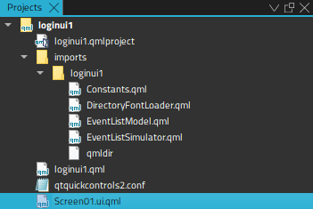

Projects

You can use the project tree in the following ways:
- To open files that belong to a project, double-click them in the project tree. Files open in the appropriate editor, according to the file type. For example, code source files open in the code editor.
- To bring up a context menu that has the actions most commonly needed, right-click an item in the project tree. For example, through the menu of the project root directory you can, among other actions, run and close the project.
- To see the absolute path of a file, move the mouse pointer over the file name.
- To move files from one project to another, drag-and-drop them in the project tree. Qt Design Studio makes the necessary changes to project configuration files.
Note: If you cannot see a file in the Projects view, switch to the File System view, which shows all the files in the file system.
Projects View Context Menu
The Projects view has context menus for managing projects, subprojects, folders, and files. Use the following functions to manage projects and subprojects:
- Execute Build menu commands.
- Create new files. For more information, see Adding Files to Projects.
- Rename existing files. If you change the base name of a file, Qt Design Studio displays a list of other files with the same base name and offers to rename them as well. If you rename a UI file (.ui), Qt Design Studio also changes corresponding include statements accordingly.
- Remove existing files.
- Search from the selected directory.
- Open a terminal window in the project directory. To specify the terminal to use on Linux and macOS, select Preferences > Environment > System.
- Open a terminal window in the project directory that you configured for building or running the project.
- Expand or collapse the tree view to show or hide all files and folders.
- Close all files in a project.
- Close the selected project or all projects except the selected one. By default, this closes all files in the projects. To keep them open, deselect the Preferences > Build & Run > General > Close source files along with project check box.
For managing files and directories, use the same functions as in the File System view. To view a project in it, select Show in File System View.